P2 · Open games: holding a seat, and what happens at the cutoff¶
Status after #606: skipped, and replaced for the main case by E3 and E1. These journeys (P2, P2S, P2F, P2P) were written for the seeded open games that have no organiser. Since
606 the open-games list shows only organised games, so they cannot find¶
their game and skip with that reason (
P2C, the full-capacity journey, still runs). The pictures below are from the last run before #606 (commit830e10a7). Porting P2, P2S, P2F and P2P to organised games is tracked in the pull request.
| Who | Players (two of them, in two browsers) |
| Test ids | P2 (four tests), and its states and edge cases: P2S (cancelled and decided games), P2C (a full game), P2F (full, no goalkeeper hint), P2P (a played game) |
| Needs | the local stack with Stripe in test mode and a venue that can take a card |
| Catalogue | P-18 … P-31 in CATALOGUE.md |
What this flow is for¶
An open game is a game that already exists (a pitch is held for it) and has free seats; anyone can take one. Taking a seat holds the price on the player's card but does not charge it. The game needs a minimum number of players by the cutoff. At the cutoff the system decides:
- enough players: the game is ON, every held seat is charged;
- not enough: the game is cancelled, every hold is released, nobody is charged.
This is the money moment of the whole open-game product, so the journey does not stop at «a seat was held»: it brings the cutoff forward (a labelled test helper moves the clock of that one game; the stack's real worker then decides) and checks the database and Stripe for what happened.
The flow at a glance¶
sequenceDiagram
autonumber
actor A as Player A
actor B as Player B (second browser)
participant G as The open game
participant W as The worker (at the cutoff)
participant S as Stripe
A->>G: «Hold my seat» (card 4242)
G->>S: authorise, do not capture
G-->>A: seat held · «My bookings» lists it
A->>G: leaves: the hold is released
A->>G: takes a new seat (rejoin)
B->>G: «Hold my seat» (3-D Secure card)
G-->>B: seat held after the bank challenge
Note over G,W: the test moves the cutoff to a minute ago and lowers the minimum to 2
W->>G: decide
alt enough players
W->>S: capture both holds
G-->>A: «the game is ON»
else too few players
W->>S: void the holds
G-->>A: «released, you were not charged»
endStep by step: both players hold, the cutoff captures¶
The same moment, on an organised game, is in E3.
P2 captured: 4242 hold, held, leave, rejoin; a second player holds with 3-D Secure 3155; the cutoff captures both¶
Step 5. They open the game: who is in, the deadline for enough players, and the price per seat.
on screen: open the game: the roster, the deadline and the price
Note: ΔΕΙΓΜΑ Ξύλινα Καισαριανής 5x5 Κυρ 25/10 · 19:15 · Καισαριανή · 2,3 χλμ 5,50 € ανά παίκτη Χρειάζονται τουλάχιστ
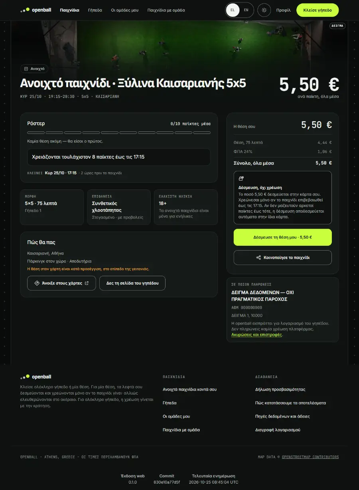
Step 10. The page says the money is held, not charged, and the test checks that the database and Stripe agree.
on screen: held: the page says the money is HELD, not charged; the database and Stripe agree

Step 19. The page says the money is held, not charged, and the test checks that the database and Stripe agree.
on screen: held: the page says the money is HELD, not charged; the database and Stripe agree

Step 26. The bank's test page appears; they press «Complete».
on screen: 3-D Secure: press «Complete»
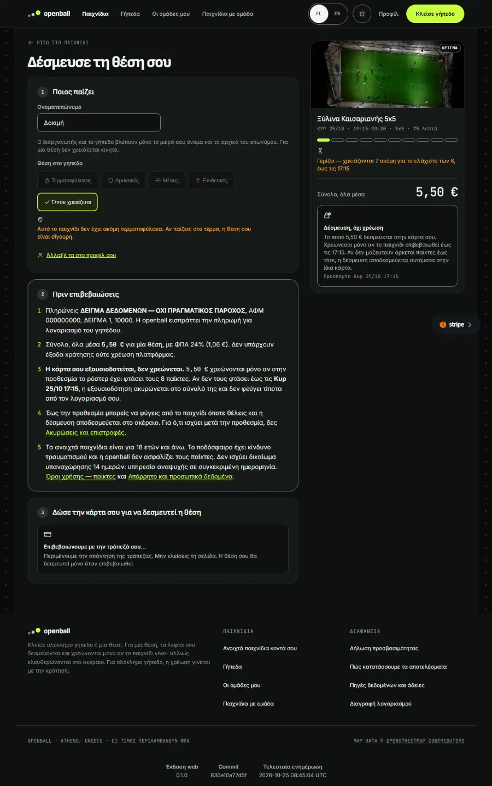
Step 27. The page says the money is held, not charged, and the test checks that the database and Stripe agree.
on screen: held: the page says the money is HELD, not charged; the database and Stripe agree
Step 29. The system's background job decides: enough players, so the game is ON and both holds are charged (database and Stripe agree).
on screen: the cutoff: the worker confirms the game and CAPTURES both holds (database and Stripe)
Note: deadline was 2026-10-25T15:15:00.000Z, minimum was 8
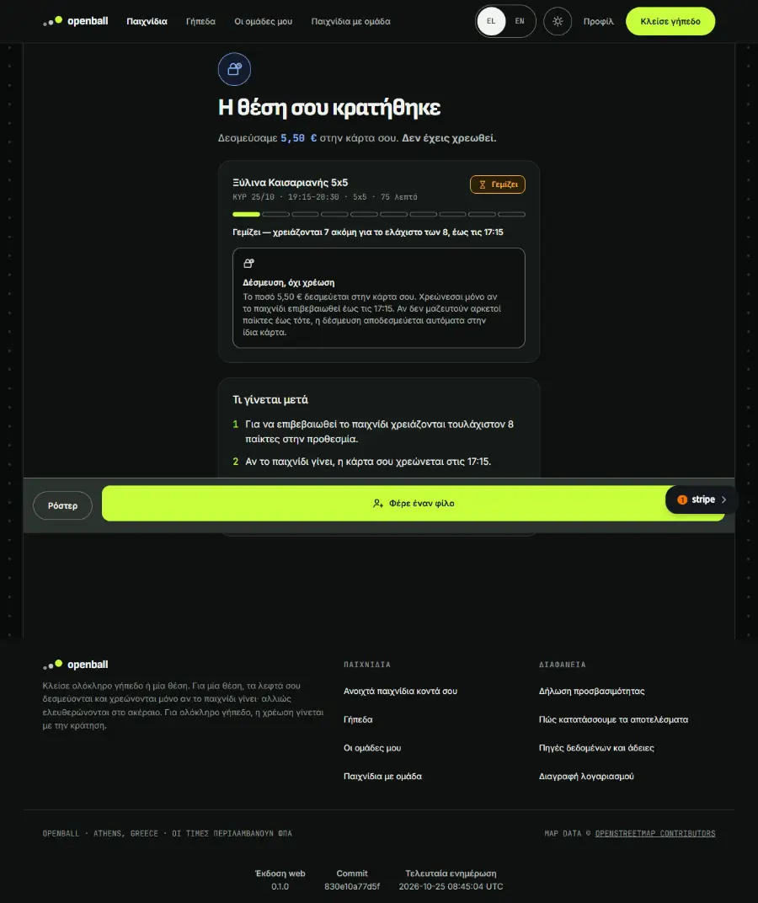
Step 30. Player A opens the game: it says the game is confirmed and offers no seat.
on screen: player A opens the game: it says the game is ON (confirmed)
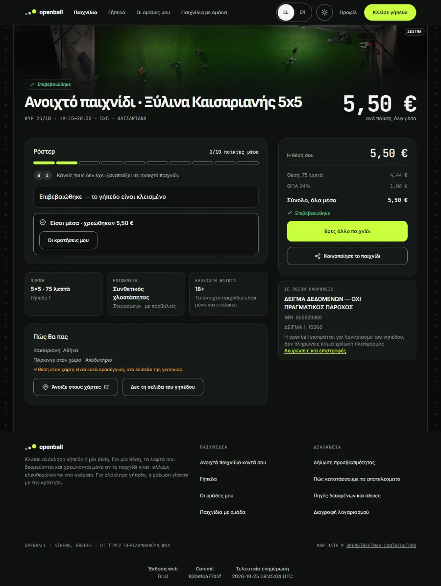
Step 32. In «My bookings» the seat now says «Paid, the game is on», with the price and no «Leave».
on screen: player A: My bookings shows THIS game’s seat as paid («Πληρώθηκε — το παιχνίδι επιβεβαιώθηκε», the seat price), with no «Αποχώρηση»
Note: the cards are located by their /games/<id> link, one per seat this player had in the game (the left seat and the charged one); the paid state is the chip of the card the database says was charged, so the step cannot pass on a seat that is still held (that chip reads «Δέσμευση, όχι χρέωση»)
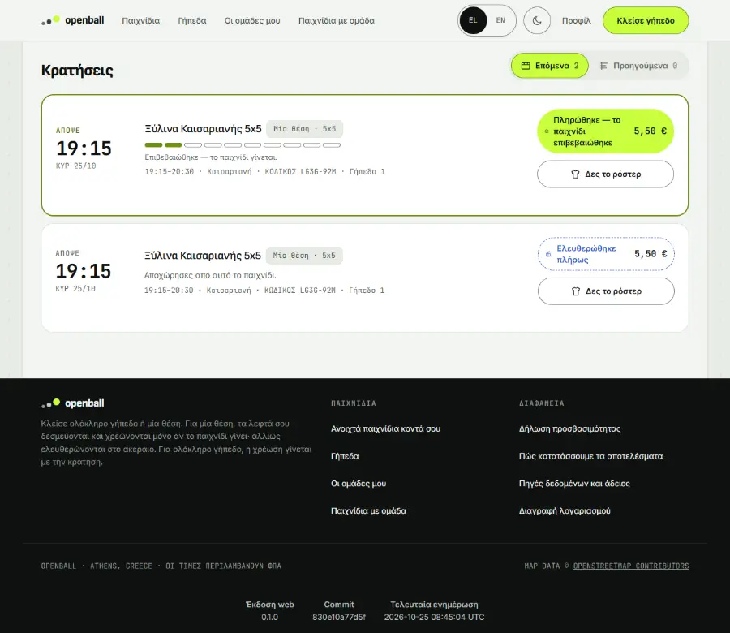
Step by step: the game does not reach its minimum¶
The cancelling side, on an organised game, is the second test of E1.
P2 released: the game does not reach its minimum; the hold is voided; the cancelled-game states (#381 items 1-3)¶
Step 5. They open the game: who is in, the deadline for enough players, and the price per seat.
on screen: open the game: the roster, the deadline and the price
Note: ΔΕΙΓΜΑ Byron Soccer Club Κυρ 25/10 · 19:15 · Βύρωνας · 2,7 χλμ 5,50 € ανά παίκτη Χρειάζονται τουλάχιστον 8 παί
Step 10. The page says the money is held, not charged, and the test checks that the database and Stripe agree.
on screen: held: the page says the money is HELD, not charged; the database and Stripe agree
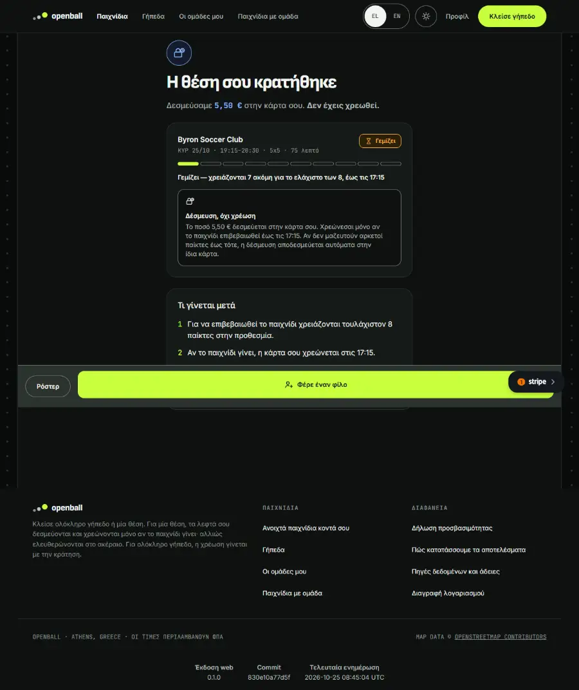
Step 13. the cutoff: the worker cancels the game and VOIDS the hold (database and Stripe)
Note: by design the seat row of a game that did not fill keeps its status (the worker code: "when the game did not confirm every seat is dead with it, and the game’s own status says so"); the money is what is asserted
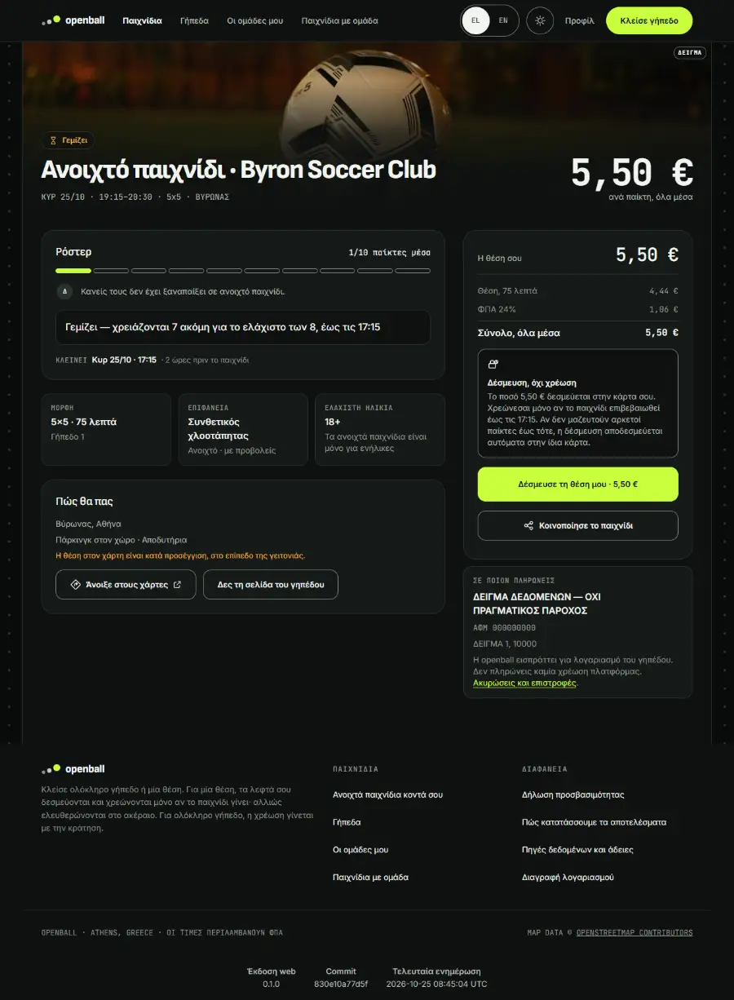
Step 14. «Κρατήσεις»: My bookings says the game was cancelled and holds no money; no «Αποχώρηση» on a dead game
Note: the seat row after the cutoff: «held»
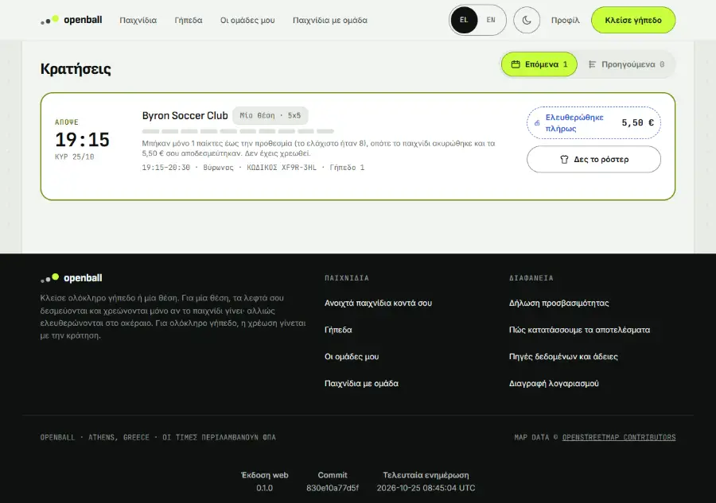
Step 15. the player who held a seat opens the game: it says cancelled, and that their money was released
Note: PASSES today only because the page is not viewer-aware: the web app code renders this sentence for EVERY visitor (#381 item 1; the step below shows it to someone who never joined). It does not prove the page knows this person held the seat. When the page becomes viewer-aware, tighten this step to the holder’s own seat (and keep the stranger’s step below)
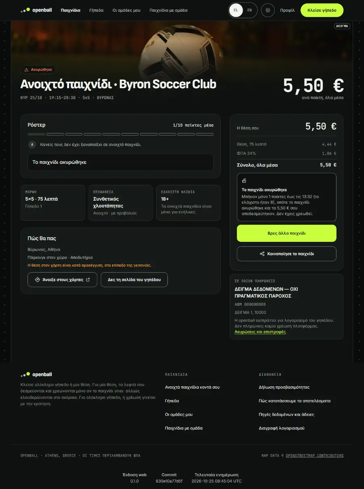
Step 17. #381 item 1: the cancelled game, seen by someone who never held a seat: no «your € were released / you were not charged»
Note: #381 item 1: "the cancellation message assumes the reader paid"
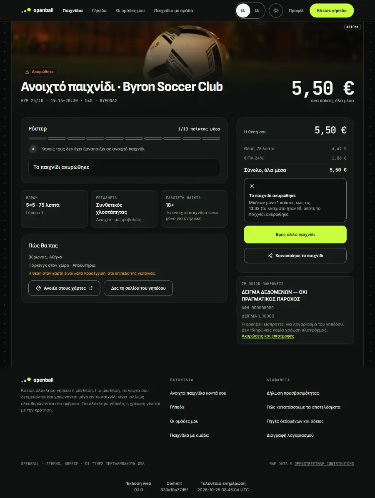
When the browser's confirmation never arrives (#446)¶
A seat's hold is confirmed twice over: the browser tells the API, and the API can also ask Stripe. Two tests drop the browser's confirmation on purpose: with enough players the cutoff still counts the player, confirms the game and captures the hold; with too few the worker voids the hold and the screens say it was released. Pictures of those two runs are in the run report; the rule is the same as above.
The states people see (P2S, P2C, P2F, P2P)¶
These states were pictured by the last run before #606; they are not re-recorded until the journeys are ported.
P2S #381 open-game states: the list, the cancelled sentence, the minimum, the day chips¶
Step 4. A signed-out visitor opens the cancelled game: it says the game was cancelled and does not claim a release that never happened.
on screen: #381 item 1 (el): the cancelled game, signed out, says nothing about the visitor's money
Note: #381 item 1
Step 6. For a player whose card was really held, the cancelled game says the hold was released and they were not charged.
on screen: #381 item 1 / #437: paid (a hold, voided by the worker), el, 1280px: the money sentence IS there
Note: #381 item 1 / #437
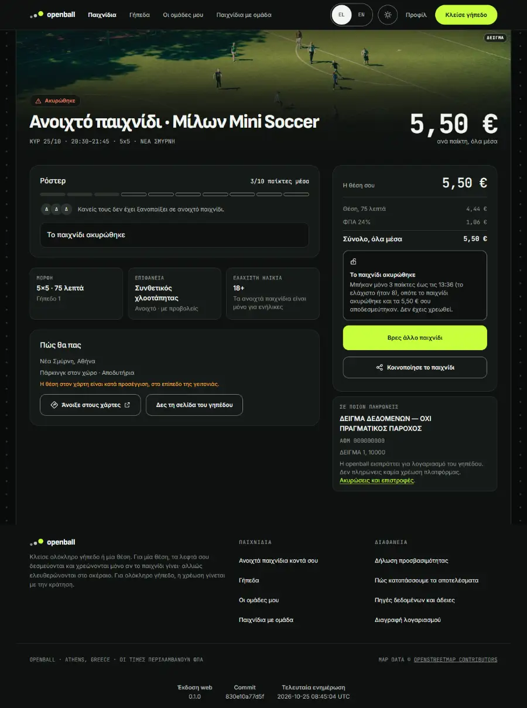
Step 10. #381 item 1 / #437: never gave a card (nothing held), el, 1280px: no sentence about money that was never held
Note: #381 item 1 / #437
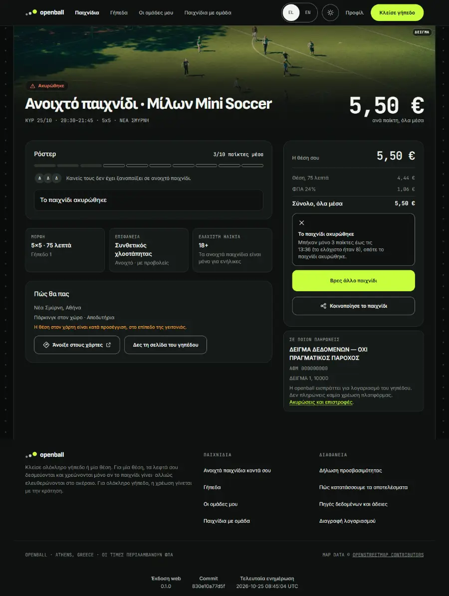
Step 14. #381 item 1 / #437: card declined, 4000 0000 0000 0002 (nothing held), el, 1280px: no sentence about money that was never held
Note: #381 item 1 / #437

Step 23. A game at 6 of 10 says «2 more needed for the minimum of 8», never a bare «2 more».
on screen: #381 item 3 (el): 6 of 10 says 2 more FOR THE MINIMUM OF 8
Note: #381 item 3
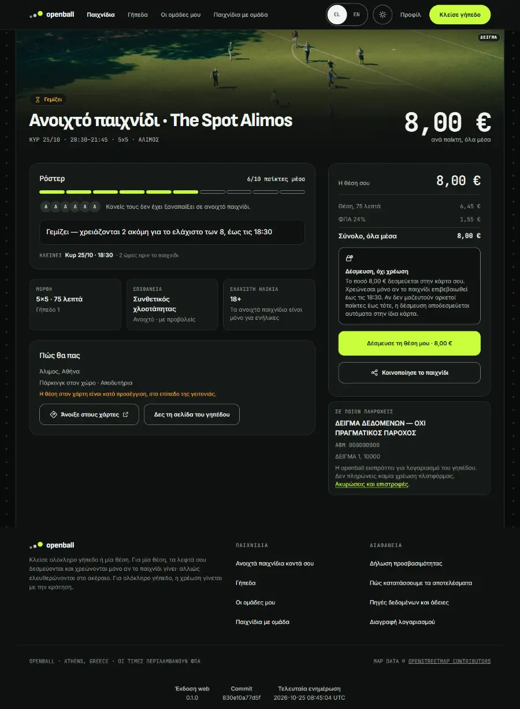
Step 25. On the venue page every day chip agrees with its number and says what it counts.
on screen: #381 item 4: B's venue page, the day chips agree with their number and say what they count
Note: #381 item 4
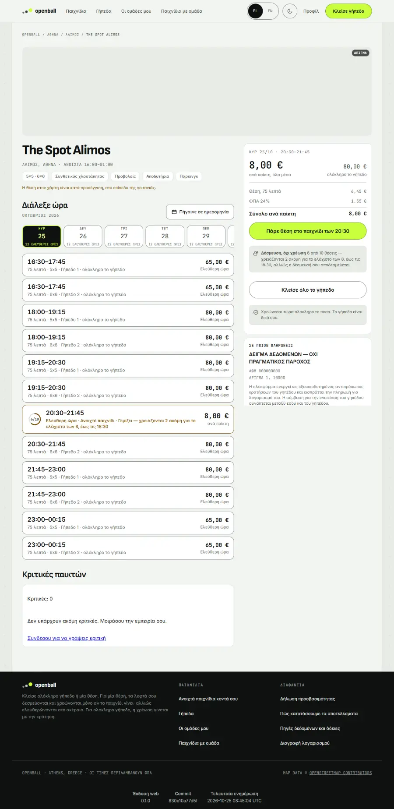
What you should see¶
- A held seat is a hold, not a charge: the page says so before the card is asked for, and again in «My bookings».
- The open-games list only offers games a seat can still be taken in: games the cutoff already decided are not offered.
- A game that does not reach its minimum says «the game was cancelled» and, only to a player whose card was really held, that the hold was released. A player who never gave a card, or whose card was declined, is never told «your money was released» (nothing was held).
- A minimum is always explained: «6/10, 2 more needed for the minimum of 8», never a bare «2 more».
- A full game stays «full» and does not nag for a goalkeeper; the last player can still open their own seat.
- A played game keeps the roster total it had.
Edge cases and how they behave¶
| Case | Behaviour |
|---|---|
| Leave, then take the seat again | The hold is released; the new seat is a new seat |
| 3-D Secure | The bank's test page appears; pressing «Complete» holds the seat |
| Card declined at the card step | No hold; the seat is not kept; the player is told |
| The player never gives a card | The seat is claimed and nothing is held; the cutoff treats it as no hold |
| Cutoff reached | The worker decides; no screen decides |